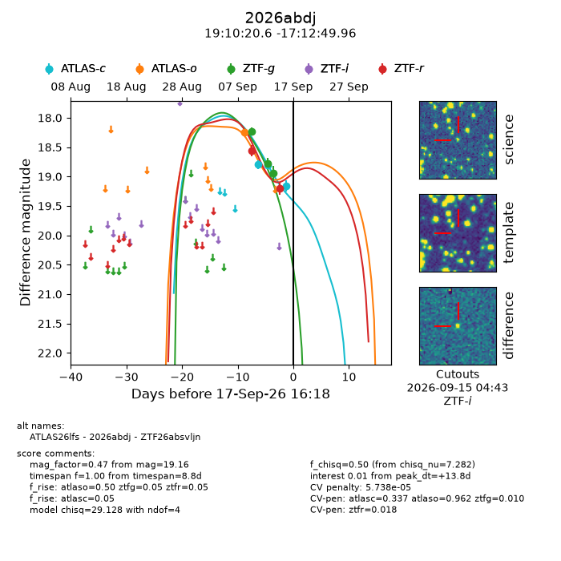
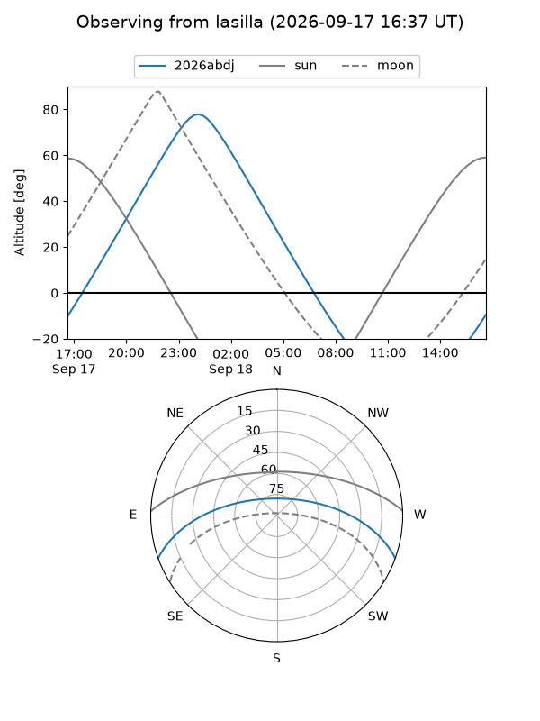
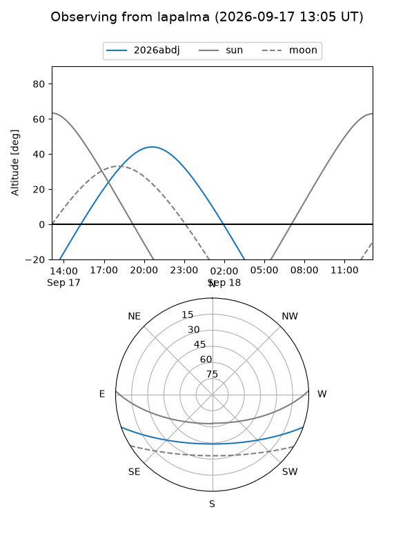
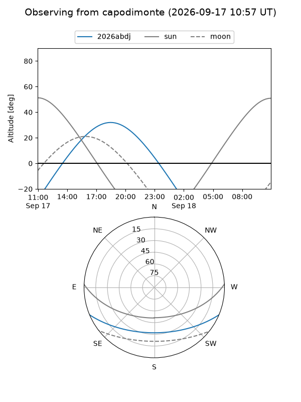
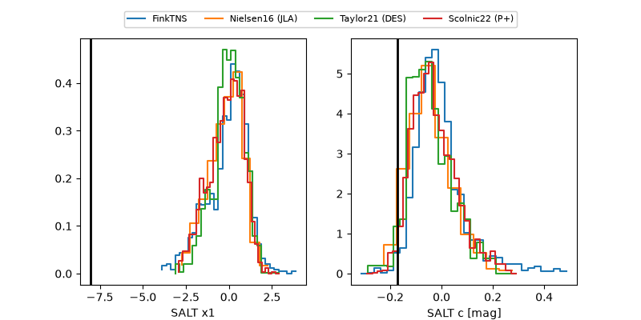

2026abdj
Target 2026abdj at 2026-09-18 04:20
Aliases and brokers:
FINK-ZTF: ztf.fink-portal.org/ZTF26absvljn
Lasair-ZTF: lasair-ztf.lsst.ac.uk/objects/ZTF26absvljn
ALeRCE-ZTF: alerce.online/object/ZTF26absvljn
YSE-PZ: ziggy.ucolick.org/yse/transient_detail/2026abdj
TNS name: wis-tns.org/object/2026abdj
Direct TNS query: direct search
alt names
ZTF26absvljn (ztf,fink_ztf)
2026abdj (tns,yse)
ATLAS26lfs (atlas)
Coordinates:
equatorial (ra, dec) = 287.5858,-17.21388
equatorial (HMS+DMS) = 19:10:20.60,-17:12:49.96
galactic (l, b) = (19.4918,-11.82897)
Flags:
TNS type: nan
peak dt: +14.3
likely cv: !!
Photometry:
last atlasc=19.16, atlaso=18.25, ztfg=18.95, ztfr=19.20
3 atlasc, 1 atlaso, 3 ztfg, 2 ztfr detections
Lightcurve

Visibility



Additional plots
